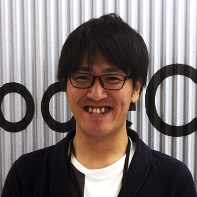
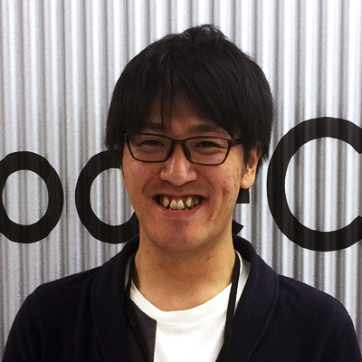

Product List
by. Noboru Tanaka
Adobe Photoshop / Adobe AfterEffects / Adobe Illustrator / EDIUS
C#.NET / SQLServer
HTML / CSS / PHP / JavaScript/ jQuery / MySQL
Product List
by. Noboru Tanaka
Adobe Photoshop / Adobe AfterEffects / Adobe Illustrator / EDIUS
C#.NET / SQLServer
HTML / CSS / PHP / JavaScript/ jQuery / MySQL
「だいたいの観光地は巡りました」と話すお2人。
打ち合わせの際にお持ち頂いたお写真は、100枚近くにものぼりました。
国内外問わず足を伸ばすお2人のスケールを地球儀で表現したオープニングムービーです。